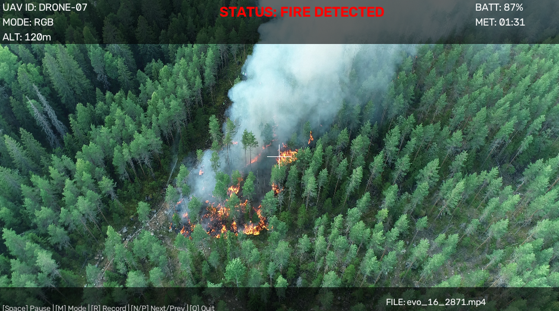
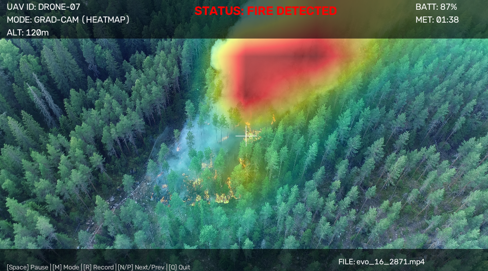
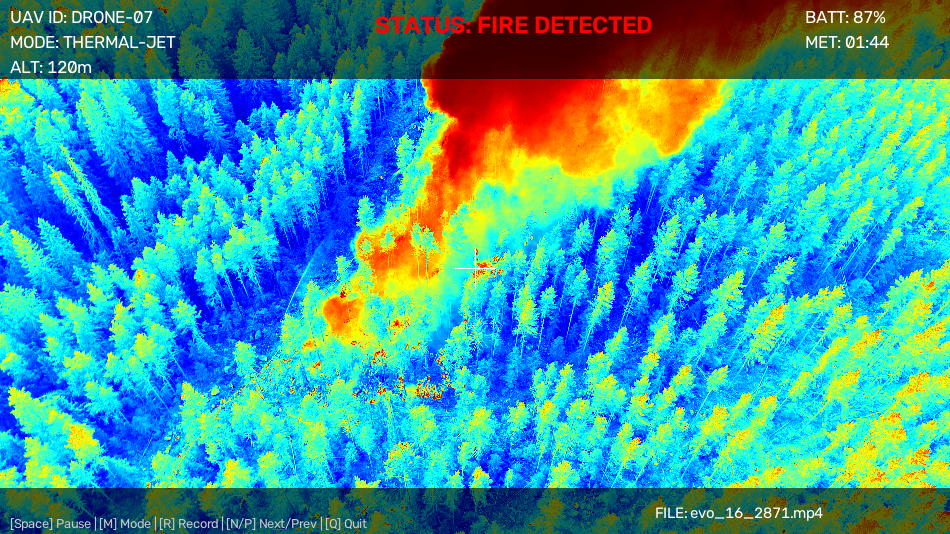
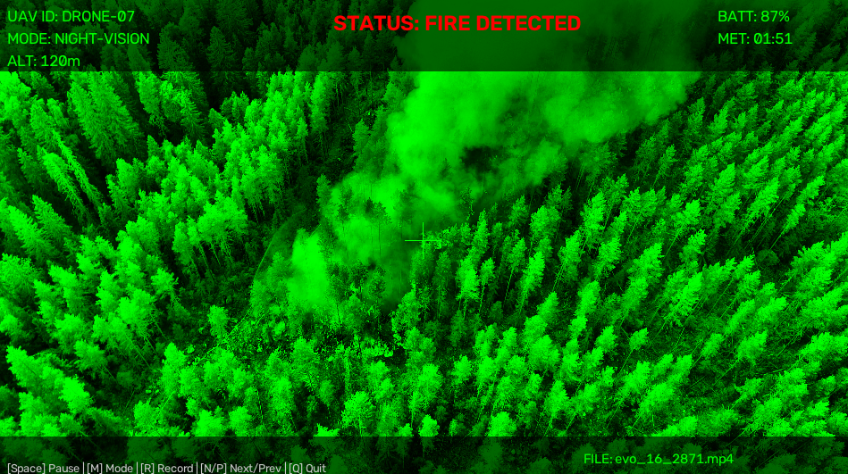
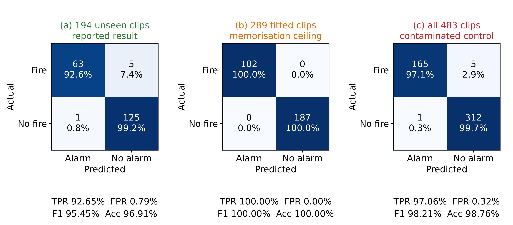

1 Department of Computer Engineering, Faculty of Engineering, Haliç University, 5. Levent Mahallesi, 15 Temmuz Şehitler Caddesi No. 14/12, 34060 Eyüpsultan, Istanbul, Türkiye
Alaeddin Gazi Toprak: ORCID 0009-0005-0822-5700, Email: 24451505003@ogr.halic.edu.tr; Alireza Souri: ORCID 0000-0001-8314-9051
*Corresponding Author: Alireza Souri. Email: alirezasouri@halic.edu.tr
This paper reports one component of the first author’s undergraduate thesis, IoV-Supported Drone Real-Time Fire Detection, Department of Computer Engineering, Haliç University. It is confined to the onboard detection node; the communication layer is not addressed here.
ABSTRACT: Deep convolutional detectors can exceed the energy budget of lightweight unmanned aerial vehicles, motivating hand-set color rules that run on a central processing unit. This paper tests that justification. A fully specified detector intersecting hue-saturation-value, red-green-blue and luma-chroma spaces reaches, on the test split of a public wildfire dataset, a 52.65% F1-score against the 55.89% of a constant fire predictor and 43.41% accuracy against the 61.22% of a constant no-fire predictor. A saturation sweep moves recall by 32.70 points while precision stays within 2.25 points of the class prior, whereas a model fitted on the same 512-bin color histogram reaches 82.28% F1 and 85.28% with vertical-band histograms; the cheapest learned model costs 1.35 times the hand-set pipeline while scoring 77.33% against its 49.14%. The failure therefore lies in the decision rule, not in the evidence or the compute budget, and a resolution control attributes 84.19% of spurious detections to an absolute area threshold. The detector itself is then replaced: a retrained MobileNetV3-Small reaches a 92.65% true positive rate at a 0.79% false positive rate on the 194 clips of an independent 483-clip real aerial corpus that contributed no training gradient, against 100.00% on the clips it was fitted on and 97.06% when the clip-level partition is ignored; that 4.41-point gap is the kind of optimism this literature leaves unmeasured. Two further controls bound the figure: every negative comes from one of the two source corpora, and holding the source constant lowers the recall to 85.29%, while partitioning at the source event rather than the clip costs a further point. The replacement clears null baselines the hand-set rule does not.
KEYWORDS: Edge computing; hand-crafted features; learned baseline; multi-color-space fusion; null baseline; reproducibility; unmanned aerial vehicles; wildfire detection
Wildfire management requires incipient-stage intervention to prevent extensive ecological and economic degradation [1–3]. Conventional early warning mechanisms, including satellite-based synthetic aperture radar and static observation towers, frequently miss the critical initial intervention window because of orbital revisit delays and geographical obstructions [4]. Unmanned aerial vehicles (UAVs) address these physical limitations through low-altitude deployment and flexible revisit scheduling [5,6], supported by systematic coverage path planning over the area at risk [7]. However, relying on continuous teleoperation, that is, streaming raw high-resolution video payloads to ground control stations, exposes disaster response networks to bandwidth bottlenecks, high cognitive load for human operators, and total system failure during signal loss.
To mitigate transmission dependency, surveillance systems must execute visual inference locally through edge computing [8]. This introduces a hardware-dependent algorithmic constraint: deep convolutional neural networks (CNNs) can provide high mean average precision (mAP), but their cost depends on model design, input resolution, accelerator availability and the target platform. Deploying comparatively heavy models on tactical or lightweight UAVs can accelerate battery drain, induce thermal throttling, and reduce flight endurance [9]. Basic color thresholding avoids some of these costs, but can yield a false-positive rate too high for autonomous operation by classifying stationary red vehicles, autumnal foliage, or solar reflections as active fires.
The aerial node envisaged here does not operate alone. UAV-assisted Internet of Vehicles (IoV) architectures place the aircraft in a vehicular network alongside ground units and response vehicles; the design space for that integration has been surveyed by Hemmati et al. [27] and the connectivity substrate on which it depends by Souri et al. [28]. Such an architecture rests on a prerequisite that is seldom audited on its own: the verdict the aerial node transmits must be worth transmitting. A link that carries an alarm produced by a rule a constant predictor would beat spends bandwidth propagating noise, and no improvement in scheduling, routing or handover recovers that loss. This paper therefore audits the node rather than the network. The communication substrate, its latency budget and its failure modes lie outside its scope and no claim is made about them anywhere below; what is established is whether the detector that would sit behind such a link earns its place there.
This paper implements the strongest CPU-only heuristic detector the authors could construct within these constraints, and then subjects it to an adversarial evaluation whose purpose is to establish what it achieves, where it fails, why it fails, whether the stated motivation for building it that way holds, and what should replace the part that does not work. The contributions are therefore diagnostic rather than performative, and the last of them is constructive:
The remainder of this paper is organized as follows. Section 2 reviews related literature in computer vision and edge computing. Section 3 details the mathematical formulation of the multi-color-space architecture. Section 4 presents the image-level, ablation and latency results, and closes in Section 4.5 with the deep edge replacement. Section 5 states what the study does and does not establish, and what a defensible successor architecture would require.
The adaptation of computer vision for autonomous fire detection is characterized by a methodological evolution from static pixel dominance to deep spatiotemporal pattern recognition. Early research relied primarily on the RGB color space, postulating that flame cores exhibit markedly higher red-channel intensities than the green and blue channels, and deriving explicit inter-channel ordering rules on that basis [10]. However, the susceptibility of the RGB model to environmental illumination and shading prompted a transition toward the HSV color space, which isolates chromaticity (hue) from brightness (value). Subsequent advances demonstrated that the YCbCr model, and specifically the separation of luma (Y) from red chroma (Cr), provides effective filtering of high-lumen artifacts in central fire zones and yields a generic color model that transfers across illumination conditions [11]. Color-space design for fire segmentation remains an active problem rather than a settled one: Giwa and Benkrid [12] recently optimized an RGB-to-flame color-space transform by hybrid metaheuristic search and reported a 20% mean F1-score improvement over conventional color models, which is direct evidence that the standard spaces used in this paper are a weak substrate for the task.
To address the inherent limitation of purely color-based static heuristics, namely the misclassification of stationary inorganic objects, spatiotemporal methods were introduced to quantify the physical oscillation of flames, employing frame differencing and flame-contour dynamics to isolate irregular kinetic behavior [13].
In recent years, deep learning paradigms [14] and advanced classical models [15] have largely overshadowed basic heuristic approaches. CNNs have achieved high mAP metrics [16–18] by extracting complex contextual and textural features from large datasets. However, this accuracy is inherently coupled with computational cost: deploying multi-gigaFLOP architectures on lightweight UAVs induces thermal throttling and limits operational flight times [8,9]. Alternatively, classical image processing [19], color-based heuristic models [10,11,13], and optical remote sensing techniques [4] provide baseline computational efficiency. Foundational fusion methodologies [20] and bounding-box regression techniques such as intersection-over-union (IoU) variants [21] have been used to optimize such systems for real-time deployment.
Work published since 2022 has concentrated almost entirely on making deep detectors small enough to fly. Bouguettaya et al. [22] survey early wildfire detection from UAVs using deep-learning computer vision. Luan et al. [23] enhance YOLOX for small-object wildfire detection in UAV imagery through a multi-level feature extraction structure and attention in the neck. Lu et al. [24] propose FCMI-YOLO for edge devices, combining a lightweight backbone module, cross-scale feature fusion and mixed local channel attention, and report a 40% parameter reduction relative to YOLOv5s. Mamadmurodov et al. [25] pair an EfficientNetV2 backbone with channel attention for early forest fire detection. Closest in spirit to the deployment question raised here, Titu et al. [26] distil YOLOv8 and run it on a single-board computer carried by a quadrotor, reporting operation at approximately 8 frames per second in live flight.
Two properties of this recent literature motivate the evaluation design adopted in Section 4. First, each of these systems is benchmarked against other deep detectors; none of them reports a comparison against a color-threshold pipeline, and none reports a constant-predictor baseline on its own class distribution. How much a modern learned detector actually gains over the heuristics it replaced is therefore not answered by this literature. The present paper approaches the question from the opposite direction, first by quantifying how little the heuristic branch achieves against explicit null baselines, and then by fitting a deliberately minimal learned model on the same features, so that any gap is attributable to the decision rule rather than to the feature set or the compute budget. Second, the class balance of the evaluation sets is rarely stated, which is precisely the condition under which a constant predictor becomes competitive, as Section 4.1 demonstrates.
On the communication side, the integration of UAVs into vehicular networks has been surveyed systematically by Hemmati et al. [27], who map the UAV-assisted Internet of Vehicles design space, and the connectivity and V2X substrate on which such a system depends has been reviewed by Souri et al. [28]. At the deployment layer, Ebrahimishadman and Souri [29] run an edge-optimized YOLOv8 detector together with an optical-character-recognition stage on a Raspberry Pi under ONNX Runtime, without an accelerator, reporting an end-to-end latency of about 1.7 s per image for that task. That result bears directly on the argument of this paper from the opposite direction: a learned detector does run on CPU-only edge hardware, so the question is not whether learning is affordable there but what latency the application can tolerate.
The fundamental departure of the proposed architecture from contemporary deep learning methodologies lies in bypassing the hardware cost barrier for edge computing. Rather than relying on the GPU acceleration assumed by the CNN detectors of [16–18], this research executes a simultaneous logical intersection of the RGB, HSV, and YCbCr color spaces, augmented by a kinetic flickering layer that applies an explicit penalty to temporally static clusters. The intended effect of that penalty is to reduce stationary detections while retaining the lightweight processing footprint required for continuous UAV deployment. Section 4.5 replaces the stage outright and does not isolate the effect on the video available here, and Section 4.1 shows that the chromatic stage alone carries a false-positive rate above 80% on still images; we therefore present the formulation as a hypothesis that the evaluation tests rather than as an established improvement.
The surveillance architecture is constructed using a decoupled, modular design that implements a singleton pattern for configuration access, ensuring strict isolation between the computational inference engine, the heads-up display (HUD) rendering loop, and the network transmission layer. All parameter values reported in this section are the literal values used in the released implementation. The per-frame pipeline of Sections 3.1 to 3.3 is summarized as Algorithm 1. The reader should note which stages each experiment exercises, because the stages are not all tested equally. Sections 4.1 to 4.3 and the threshold sweep of Section 4.4 use only the color-space stage of Section 3.1, with flickering disabled because their inputs are independent still images. Section 4.3 adds the absolute area criterion of Eq. (2), which is the subject of that control. The learned baselines of Section 4.4 replace the decision rule entirely and use no stage of Section 3 except, in the cascade variant, the proposals of Sections 3.1 to 3.3. Section 4.5 exercises the full per-frame pipeline of Sections 3.1 to 3.3, including the temporal stage, but qualitatively only.
The initial detection phase filters optical radiation across three parallel domains, evaluated on the same 8 bit per channel input frame:
Candidate pixels surviving all three filters are combined by a bitwise AND intersection. To prevent central flame cores from being discarded because of camera overexposure, a "white-hot" bypass mask defined by R > 240, G > 230, and B > 200 is computed separately, eroded with a 15 × 15 elliptical structuring element [30] to eliminate micro-specular highlights from reflective surfaces, and then merged into the intersection mask with a bitwise OR. Only white-hot regions large enough to survive that erosion, such as fully overexposed flame cores, are reinstated. The combined mask is then closed with the same 15 × 15 element, opened with a 5 × 5 element to remove residual noise, and dilated twice with the 15 × 15 element to consolidate adjacent flame blobs before contour extraction.
Three conventions govern how the literal values above are to be read, and none of them can be inferred from the numerals alone. First, the hue bounds are expressed in the 0 to 179 integer range that the imaging library's color conversion emits rather than in degrees, so the flame-core band covers 0° to 30° of hue, the halo band 30° to 70°, and the red-edge band 320° to 360°; a reader who transfers the numerals unchanged to a library with a 0 to 359 convention obtains bands half as wide as the ones evaluated here. Second, the saturation floors are applied within each band while the common value floor is applied to their union, which is arithmetically identical to applying it three times and is how the released code is written. Third, every structuring element named in this paper is elliptical rather than rectangular, so the 15 × 15 element is the disc inscribed in a 15 × 15 square and covers 169 of its 225 pixels, the 7 × 7 element 33 of 49 and the 5 × 5 element 17 of 25; substituting rectangular elements enlarges the closing and both dilations and is not a cosmetic change. One ordering detail carries the same weight: the white-hot union is formed before the morphological chain rather than after it, so an overexposed flame core is closed, opened and dilated on the same footing as a chromatically detected one instead of bypassing those stages.
To differentiate dynamic flames from static color-matched anomalies, a temporal layer computes the absolute difference between frame t and frame t − 1, adapting principles of temporospatial feature extraction [31]. The difference image is converted to grayscale and binarized with a motion threshold of τmotion = 30, then morphologically closed with a 7 × 7 elliptical element to yield the flicker mask.
Each candidate cluster receives a base heuristic score of 0.60 + 0.10s, where s denotes the contour solidity, that is, the ratio of contour area to convex hull area. The base score therefore lies in [0.60, 0.70]. The temporal layer then modifies this score using the flicker ratio ρ, defined as the mean normalized intensity of the flicker mask inside the cluster bounding box:
Clusters must satisfy \( C_{alg} \geq 0.50 \) to be emitted. Two properties of Eq. (1) govern the behavior reported in Section 4. First, the reward branch is proportional to ρ and therefore contributes at most +0.30, not a fixed bonus. Second, and more consequentially, the penalty branch subtracts 0.30 from a base score whose maximum is 0.70, which drives any temporally static cluster below the 0.50 acceptance threshold and removes it entirely. The suppression of color-matched stationary objects is thus produced by the penalty branch rather than by the reward branch. When no preceding frame exists, the flicker mask is undefined, Δ(ρ) is not applied, and the detector degenerates to the purely chromatic behavior of Section 3.1.
The minimum cluster area is scaled with the reported flight altitude h, in meters, so that distant small fires remain detectable, using a base area of 600 px at the reference altitude of 50 m:
The flicker ratio floor is set to the permissive value of 0.01 rather than a stricter value, so that a momentary occlusion of the flame by smoke does not immediately delete an established bounding box.
Four properties of Eqs. (1) and (2) belong to the implementation rather than to the equations, and the first three of them can change a reported count. The solidity s is the ratio of the contour area to the area of its convex hull, both computed by the polygon area rule; the released code guards the division by defining s = 0 when the hull area vanishes, although that branch is in fact unreachable, since the guard sits inside the area test and a hull is never smaller than the contour it encloses. The flicker ratio ρ is the mean of the binarized flicker mask over the axis-aligned bounding box of the cluster, divided by 255 so that it lies in [0, 1], and it is taken over the box rather than over the contour interior, so a thin or branched flame front is charged for the motionless background its box encloses. The area comparison of Eq. (2) is strict, area > Amin(h), and contours are retrieved in external mode only, so an annular flame front enclosing a dark burnt interior is scored as a single cluster rather than as a ring and a hole. Finally, the still-image cohorts carry no altitude metadata, so every image-level experiment in this paper passes the reference altitude h = 50 m, which fixes Amin at 600 px and, through Eq. (3), dmerge at 75 px throughout Sections 4.1 to 4.5. The altitude scaling of Eq. (2) is therefore reported because it is in the released code and not because any experiment here exercises it; the resolution control of Section 4.3 tests the pixel-area assumption behind it, but no measurement in this paper varies h.
Intersecting flame clusters generate bounding boxes that are subsequently refined by non-maximum suppression (NMS). The suppression criterion is an asymmetric overlap ratio, computed as the intersection area divided by the area of the smaller box; any minor box whose area is more than 30% contained within a larger box is erased. This quantity is a run-time filtering mechanic related to the principles of bounding-box regression [21]; it is not the symmetric IoU, and it is not used anywhere as an evaluation metric, because the datasets employed in this study carry no bounding-box ground truth.
Concurrently, a greedy proximity merge consolidates adjacent sub-clusters into unified detection zones, preventing artificial inflation of the threat count. Two boxes are merged when their edge-to-edge separation does not exceed an altitude-dependent distance
where the coefficient \( \kappa \) converts altitude to a pixel budget and so reflects the increase in ground sample distance with altitude. The merge is iterated to a fixed point, and the merged cluster inherits the maximum heuristic score and the summed area of its constituents. No experiment in this paper isolates the contribution of the suppression and merge stages: they alter the geometry and the count of the emitted boxes but not, on the datasets used here, the image-level or frame-level decisions that Section 4 measures. Their effect is therefore shown only qualitatively, in Section 4.5, and is not quantified.
Both stages are specified more tightly below than the description above requires, because a reimplementation would otherwise be free to choose details that change the emitted geometry. Suppression is a single non-iterative pass: each box is compared once against every other, and it is erased only by a box of strictly greater area, so neither member of an equal-area pair suppresses the other and the outcome does not depend on the order in which the contours were returned. The overlap fraction is formed from bounding-box areas rather than from contour areas, and the 30% comparison is strict, so an overlap of exactly 30% survives. The separation used by the merge is the Euclidean norm of the two axis-aligned edge gaps, each clamped at zero, which is zero whenever two boxes already overlap in both axes; the merge therefore always consolidates an overlapping pair that survived suppression, and both dmerge and the separation are evaluated in floating point, with no rounding to whole pixels.
| Input | frame F (8 bit per channel), reported altitude h in meters, previous frame Fprev or ∅ |
| Output | set of merged bounding boxes with heuristic scores \( C_{alg} \) |
| 1 | \( M_{hsv} \leftarrow \) OR of the three hue-band masks of Section 3.1, each with \( V \geq 210 \) |
| 2 | \( M_{rgb} \leftarrow (R > G > B) \wedge (R > 210) \wedge (G > 130) \) |
| 3 | \( M_{ycc} \leftarrow (Cr > 150) \wedge (Cr > Cb) \wedge (Y > Cb) \) |
| 4 | \( M \leftarrow M_{hsv} \wedge M_{rgb} \wedge M_{ycc} \) |
| 5 | \( M_{wh} \leftarrow \mathrm{erode}\big((R > 240) \wedge (G > 230) \wedge (B > 200),\; 15 \times 15\big) \); \( M \leftarrow M \vee M_{wh} \) |
| 6 | \( M \leftarrow \mathrm{dilate}^{2}\big(\mathrm{open}_{5\times5}(\mathrm{close}_{15\times15}(M)),\; 15 \times 15\big) \) |
| 7 | if \( F_{prev} \neq \emptyset \) then \( M_{flick} \leftarrow \mathrm{close}_{7\times7}\big(|F - F_{prev}| > \tau_{motion}\big) \) else \( M_{flick} \leftarrow \emptyset \) |
| 8 | for each external contour \( c \) of \( M \) with area \( > A_{min}(h) \) (Eq. 2) do |
| 9 | \( s \leftarrow \mathrm{area}(c)/\mathrm{area}(\mathrm{convexHull}(c)) \); \( \rho \leftarrow \) mean of \( M_{flick} \) in the box of \( c \) |
| 10 | compute \( C_{alg} \) by Eq. (1); if \( C_{alg} \geq 0.50 \) then emit the box |
| 11 | discard any box more than 30% contained in a larger box (asymmetric overlap, Section 3.3) |
| 12 | merge boxes separated by at most \( d_{merge}(h) \) (Eq. 3), iterating to a fixed point |
The architecture provides three visualization and processing modes for diverse lighting conditions and nocturnal deployments. The payload can programmatically cycle between standard optical RGB, a simulated ironbow/JET colormap for visualization, and an enhanced night-vision mode that applies contrast limited adaptive histogram equalization (CLAHE) [32] with a clip limit of 3.0 on an 8 × 8 tile grid, followed by a green-phosphor luminance adjustment. These modes allow the operator display to remain interpretable when visible-spectrum constraints such as dense smoke or night flight suppress standard RGB thresholds, as illustrated in Figs. 1 to 4. Both modes are post-capture transformations of an optical frame; the JET colormap in particular is a false-color rendering of grayscale intensity and does not represent measurements from a physical thermal sensor. All quantitative results in Section 4 were obtained in the standard optical RGB mode.
The three modes are specified here at the level of the operations the released viewer performs, so that a panel can be checked rather than taken on trust. The night-vision mode converts the frame to the CIELAB space, applies CLAHE to the lightness channel alone under the clip limit and tile grid given above, converts back, and then forms the displayed frame by writing 0.8 times the equalized green channel plus 0.2 times the CLAHE lightness channel into the green plane while zeroing the red and the blue planes. The mapping is monochrome green by construction, so no residual red or blue information from the frame reaches the display; the heads-up overlay is drawn on top of that mapping afterwards and is therefore the only coloured element that survives it, which is why the alarm banner remains legible in red in Fig. 4. The simulated thermal mode converts the frame to grayscale and passes it through the library's JET colormap, so the color of a pixel is a function of its luminance and of nothing else. The Grad-CAM overlay used by the deep edge detector of Section 4.5 resizes the normalized activation map to the frame, colors it through the same JET map, and alpha-blends it at an opacity equal to 0.70 times the activation, so the strongest region reaches 0.70 and a region of zero activation is left untouched rather than tinted. The viewer samples the classifier twice per second, the rate used in Section 4.5, and displays at 960 × 540. None of these paths draws a pseudo-random number, so the rendering is deterministic;
Figs. 1 to 4 are panels of the released viewer's four modes, captured from visualize_v3.py running over a clip of the corpus; they illustrate the operator-facing rendering of Section 3.4 and carry no measurement. Fig. 6 is drawn from the results artifact by tools/make_confusion_figure.py and is the only figure in this paper that reports a measured quantity. The five image files are released under the names they carry in the manuscript: fig_rgb.png, fig_gradcam.png, fig_thermal.png and fig_night_vision.png for Figs. 1 to 4, all four captured from the same clip so that the four modes are comparable, and v3_confusion_matrix.png for Fig. 6. The classifier is sampled at the network input size of 224 × 224 and the panels are composed at the viewer's display size; no bounding boxes are drawn in Figs. 1 to 4, because the deep edge detector emits a clip-level verdict and a Grad-CAM map rather than boxes. The distinction matters because Section 4.3 shows the area criterion of Eq. (2) to be resolution-dependent, so a panel drawn at one scale would not illustrate a detector evaluated at another. Two properties of the released build should nonetheless be recorded, because a reader who runs it will see them. The operator panel carries English labels, and its fields are the vehicle identifier, the reported altitude, the battery state, the mission elapsed time and the alarm banner. Of these only the elapsed time and the alarm banner are live: the identifier, the altitude and the battery state are fixed placeholder constants in the released viewer, since this study flies no aircraft and reads no telemetry. The values visible in Figs. 1 to 4, an altitude of 120 m and a battery state of 87%, are those constants and are not measurements; they are stated here so that no reader mistakes the panel for flight data, and the reference altitude actually used by every experiment in this paper is the 50 m of Section 3.2.
To support operator situational awareness and provide visual explainability, the system interface offers four toggleable visualization modes:




To evaluate the proposed architecture, a cascaded coarse-to-fine methodology was employed. First, the static color-thresholding stage was evaluated on a large-scale still-image dataset against constant-predictor null baselines, followed by a threshold sensitivity analysis on an independent validation split and a component ablation study. Second, the fully integrated spatiotemporal system and the two models fitted only on the independently sourced still-image dataset were evaluated. Third, the detector itself was replaced by a convolutional backbone and evaluated in Section 4.5 on a separate corpus of real aerial clips, partitioned at the clip level so that no clip supplies both training frames and a reported verdict. CPU inference latency was measured separately, in Section 4.4, before that replacement was introduced.
Two software environments were used, and which experiment ran in which is recorded in the header of every result file rather than left to be inferred. Environment A is the target machine: Windows 10 (build 10.0.19045), Python 3.12.7, OpenCV 5.0.0, NumPy 2.5.1, scikit-learn 1.9.0, and an Intel Core i5-8265U mobile-class CPU with a nominal base frequency of 1.60 GHz, reported by the runtime as Intel 64 family 6 model 142, paired with 8 GB of DDR4 memory. It produced every experiment of Section 4.4 including its joint latency benchmark, the qualitative video panels of Section 4.5, and the first pass of the image-level evaluation of Sections 4.1 and 4.2. Environment B is a containerised Linux environment running Python 3.10.12, OpenCV 4.13.0 and scikit-learn 1.7.2 on a shared processor that is consequently not characterized here; it produced the resolution control of Section 4.3, the saturation sweep of Table 3, the clip-level evaluation of Section 4.5, and the recomputation of Sections 4.1 and 4.2 that the released image-level artifacts contain. Two qualifications attach to Section 4.5 in particular. Its network was trained with PyTorch on CPU, on Python 3.12.7 with PyTorch 2.14.0+cpu and torchvision 0.29.0+cpu on an Intel64 Family 6 Model 142 Stepping 12, GenuineIntel CPU. Those versions are recorded in the benchmark artifact rather than in the release manifest, which is a gap in the manifest and not in the record. Its clip-level verdicts were computed in Environment B, which carries no PyTorch install, using a torch-free NumPy reimplementation of the trained network released as tools/torch_free_mobilenetv3.py and cross-checked frame by frame against the reference torchvision implementation by tools/verify_numpy_model.py.
Neither environment used a discrete graphics card, a TPU, or any other accelerator, the integrated graphics unit was never employed for computation, and every reported latency is therefore a CPU-only figure.
Because a detector whose output depended on its OpenCV version would make the two environments incomparable, agreement between them was measured rather than assumed, and the measurement is the released artifact rather than a claim about one. The image-level results of Sections 4.1 to 4.3 were first obtained in Environment A and then recomputed in full in Environment B, which runs a different operating system, a different Python and a major OpenCV version behind. The recomputation reproduced every cell of Table 1, over all 410 test images and all seven colour-space configurations, and both conditions of Table 2; the artifacts released with this paper are the Environment B run, and their headers record that environment, so a reader can verify the agreement by checking them against the figures printed here rather than taking it on trust. The agreement covers the number of surviving detections and not merely the image-level decision, which is the more sensitive quantity because any difference in JPEG decoding, resizing or morphology would perturb it. The random forests are a different matter, and the difference is not in the data: a forest fitted with a fixed seed depends on the order in which its estimator consumes pseudo-random numbers, and that order is an implementation detail that changes between scikit-learn releases. Random-forest figures are therefore reported with the scikit-learn version attached, and the reader should treat them as version-specific in a way that the linear results are not. Absolute timings are of course not comparable across the two environments, and no comparison in this paper draws a latency figure from one and sets it against a latency figure from the other.
The detector contains no stochastic component, so no random seed governs any quantity reported in Sections 4.1 to 4.5 and each of those experiments was executed once. No code path in the detection pipeline draws a pseudo-random number, and neither does the operator-facing rendering of Section 3.4, which is in any case not used in any quantitative experiment. The experiments of Sections 4.2 and 4.3 were independently re-executed, in a different environment and from a clean checkout, and reproduced every confusion matrix in Tables 1 and 2 exactly; that rerun is the artifact released with this paper. The complete parameter set is exactly that of Section 3; no parameter was altered between experiments except where an ablation explicitly disables a component.
The core multi-color-space intersection logic of Section 3.1 was isolated, with the temporal layer disabled, and evaluated against a publicly available wildfire image dataset [33]. The Kaggle release used here is licensed CC BY 4.0; its curator describes the original source images as public-domain material. The canonical release comprises 2700 RGB images collected from government agencies, Flickr, and Unsplash. The local copy processed in this study contained 2699 supported JPG/PNG image files (and one unrelated desktop.ini directory entry), partitioned as 1887 training images (730 fire, 1157 no-fire), 402 validation images (156 fire, 246 no-fire), and 410 test images (159 fire, 251 no-fire).
The training split plays no part in any experiment on the hand-set detector, because that detector contains no learned parameters; it is used only by the learned baselines of Section 4.4, which are fitted on it. For the same reason no cross-validation was performed for the hand-set detector: it has no fitted parameters whose split-dependence would need to be controlled, and the predefined thresholds of Section 3 are identical across every split. No intensity normalization, color correction, or augmentation was applied at any point; images were passed to the detector exactly as decoded, except where Section 4.3 explicitly resizes them. The color-space thresholds are predefined heuristic constants chosen to favor sensitivity to fire-like color patterns; no formal parameter optimization or validation-set tuning procedure was employed. The final evaluation was performed on the test split only. Whether the result below is a property of the method or an artifact of a dataset whose no-fire class was deliberately populated with fire-confounding content is a fair question, and it is not left open: Section 4.4 addresses it directly and rejects the second reading, by showing that a model fitted on the very same features extracts that evidence successfully from the very same images. Because the dataset provides folder-level class labels and no bounding-box annotations, the evaluation is strictly an image-level binary fire/no-fire classification: an image is predicted positive if the detector emits at least one bounding box, and negative otherwise. Object detection metrics such as IoU and mAP cannot be computed on this data and are therefore not reported anywhere in this paper.
On the 410 test images the detector produced TP = 129, TN = 49, FP = 202, and FN = 30, corresponding to an accuracy of 43.41%, a precision of 38.97%, a recall of 81.13%, an F1-score of 52.65%, a specificity of 19.52%, and a false-positive rate (FPR) of 80.48%. Because still photographs carry no temporal information, the kinetic flickering module of Section 3.2 was inactive, and by the argument following Eq. (1) the detector reduces to its purely chromatic form. Static red anomalies such as bright red vehicles, red soil, and intense sun glare consequently passed the color filters and generated false positives. These figures acquire their real meaning only against a null baseline, which the color-heuristic literature does not customarily report. On this split, 251 of 410 images are no-fire. A constant predictor that labels every image as fire therefore attains a precision of 38.78%, a recall of 100.00%, and an F1-score of 55.89%, while a constant predictor that labels every image as no fire attains an accuracy of 61.22%. The proposed detector is thus outperformed on F1-score by the constant-positive predictor and outperformed on accuracy, by 17.80 percentage points, by the constant-negative predictor. Neither constant predictor inspects the image at all.
We state the consequence directly rather than qualifying it. At the image level the hand-set color-space intersection does not extract usable evidence about the presence of fire: its recall of 81.13% is purchased by flagging 202 of 251 no-fire images, and the resulting operating point is dominated by a decision rule that ignores its input. Whether the evidence itself is uninformative, or merely inaccessible to a rule of this form, is not settled here; Section 4.4 settles it, and the answer is the latter. The measured recall is not therefore evidence of detection capability. Two mechanisms explain the outcome. Within the purely chromatic form to which the detector reduces on still images, the thresholds of Section 3.1 respond to any sufficiently bright, saturated, red-dominant region, and the no-fire half of this dataset is populated with exactly such regions: sunlit autumnal foliage, red soil, low-angle sunlight, and lens flare. Section 4.2 establishes that this is not a threshold-selection error within the family, Section 4.3 shows that a further part of the effect is an artifact of applying an absolute pixel-area criterion to images of widely varying resolution, which inflates the false-positive rate reported here by roughly 13 percentage points, and Section 4.4 shows that a model fitted on the same color evidence reaches an F1-score of 82.28% on these same images.
Incremental component testing on the test split quantifies the contribution of each color space. Each configuration disables the corresponding mask entirely, so that a disabled channel contributes an all-pass mask to the intersection. The temporal layer is disabled throughout, as required for still images. Results are given in Table 1.
| Active components | TP | TN | FP | FN | Precision | Recall | F1-score | FPR |
|---|---|---|---|---|---|---|---|---|
| HSV only | 131 | 51 | 200 | 28 | 39.58% | 82.39% | 53.47% | 79.68% |
| RGB only | 148 | 25 | 226 | 11 | 39.57% | 93.08% | 55.53% | 90.04% |
| YCbCr only | 127 | 44 | 207 | 32 | 38.02% | 79.87% | 51.52% | 82.47% |
| HSV + RGB | 136 | 38 | 213 | 23 | 38.97% | 85.53% | 53.54% | 84.86% |
| HSV + YCbCr | 115 | 69 | 182 | 44 | 38.72% | 72.33% | 50.44% | 72.51% |
| RGB + YCbCr | 129 | 49 | 202 | 30 | 38.97% | 81.13% | 52.65% | 80.48% |
| HSV + RGB + YCbCr (proposed) | 129 | 49 | 202 | 30 | 38.97% | 81.13% | 52.65% | 80.48% |
| Null: constant positive | 159 | 0 | 251 | 0 | 38.78% | 100.00% | 55.89% | 100.00% |
| Null: constant negative | 0 | 251 | 0 | 159 | — | 0.00% | — | 0.00% |
Four observations follow from Table 1. First, the RGB mask alone is the most permissive single filter, reaching the highest recall of 93.08% together with the highest FPR of 90.04%; the YCbCr and HSV masks are progressively more selective. Second, every intersection reduces both recall and FPR relative to its most permissive component, which is the expected behavior of a conjunctive filter; the HSV ∩ YCbCr pair reaches the lowest FPR of 72.51% at the cost of the lowest recall of 72.33%. Third, the full triple intersection is numerically indistinguishable from RGB ∩ YCbCr on this split, since the confusion matrices are identical. The HSV mask alters the pixel-level mask and the emitted box geometry, but at these thresholds it never changes the binary image-level decision, so the triple intersection is not empirically justified over the RGB ∩ YCbCr pair by this experiment and is retained only for the geometric refinement of the boxes.
Fourth, and subsuming the other three, no configuration in Table 1 exceeds the constant-positive F1-score of 55.89%. The highest color-space F1-score is 55.53%, obtained by the RGB mask alone, that is, by the single most permissive filter and the one closest in behavior to labeling everything positive. The ordering is informative: within this family, F1-score improves monotonically as the filter becomes less discriminative, which is the signature of a feature that carries little class information on this data. Component ablation therefore cannot be read here as an attribution of useful contributions among the three color spaces, because the quantity being attributed does not exceed its null value. Section 4.4 shows that this is a property of the conjunctive rule rather than of the color evidence, which a fitted model exploits successfully.
Sections 4.1 and 4.2 attribute a false-alarm rate above 71% to the chromatic stage. Before that attribution is accepted, one confound must be eliminated. The minimum cluster area of Eq. (2) is an absolute pixel count, 600 px at the reference altitude, whereas the still-image dataset contains images whose resolution spans 0.04 to 101.86 megapixels with a median of 12.19 megapixels. A 600 px region is 0.0049% of the median test image but 0.195% of the 640 × 480 frames on which the detector runs in the real-time video deployment, a difference of roughly forty times in relative area. On the still images the area criterion is therefore close to inoperative, and any sufficiently small chromatic speck survives it.
The data are consistent with that reading. Partitioning the 251 no-fire test images by resolution, the mean number of spurious boxes per image rises monotonically with resolution: 0.67 below 2 megapixels, then 1.50, 3.36 and 5.91, and 10.80 above 25 megapixels, with a Pearson correlation of 0.355 between image area and spurious box count. One 19.89 megapixel no-fire photograph alone yields 61 boxes. The false-alarm rate itself rises less cleanly, from 65.9% in the 5 to 10 megapixel band to 85.7% in the 10 to 25 megapixel band before falling to 76.0% above 25 megapixels, and the two smallest bands contain only three and four images respectively, so the box count rather than the image-level rate is the reliable indicator.
To separate the scale effect from the chromatic effect, the entire test split was re-evaluated with a single change: each image was decoded at full resolution and then resized to 640 × 480 by bilinear interpolation, the resolution at which the video experiments operate, before being passed to an otherwise identical detector. This control was executed for the present paper and is not part of the original evaluation scripts; the modification is one resize call. Both conditions are reported in Table 2.
| Quantity | Native resolution | Resized to 640 × 480 | Change |
|---|---|---|---|
| TP / TN / FP / FN | 129 / 49 / 202 / 30 | 111 / 81 / 170 / 48 | — |
| Accuracy | 43.41% | 46.83% | +3.42 pp |
| Precision | 38.97% | 39.50% | +0.53 pp |
| Recall | 81.13% | 69.81% | −11.32 pp |
| F1-score | 52.65% | 50.45% | −2.20 pp |
| Specificity | 19.52% | 32.27% | +12.75 pp |
| FPR | 80.48% | 67.73% | −12.75 pp |
| Spurious boxes on the 251 no-fire images | 1461 | 231 | −1230 (−84.19%) |
Three conclusions follow. First, the scale confound is real and large. Normalizing the input resolution removes 1230 of the 1461 spurious boxes, a reduction of 84.19%, raises specificity from 19.52% to 32.27%, and lowers the FPR by 12.75 percentage points. A substantial part of what Sections 4.1 and 4.2 measure is therefore an artifact of applying an absolute pixel-area threshold to images two orders of magnitude larger than the frames for which that threshold was chosen. This is a correctable implementation defect, not a property of color-space thresholding, and the earlier sections should be read with that qualification.
Second, the correction does not rescue the detector. Resizing also destroys genuinely small fire regions, so recall falls from 81.13% to 69.81% and the F1-score falls from 52.65% to 50.45%. Because both conditions are evaluated on the same 410 images, the two decision sets are paired and McNemar's test applies. On the 251 no-fire images, resizing corrects 32 decisions and breaks none (χ² = 30.03, p < 0.0001); on the 159 fire images it breaks 18 decisions and corrects none (χ² = 16.06, p = 0.0001). The trade is thus strictly one-directional in each class. Taken over all 410 images, however, the net change in accuracy is not significant (χ² = 3.38, p = 0.066), so resizing cannot be described as a better operating point; it relocates the errors rather than reducing them. Both conditions consequently remain below the constant-positive F1-score of 55.89%, and the accuracy of both remains below the constant-negative accuracy of 61.22%. The central negative result of this paper is therefore robust to the most obvious confound in its own experimental design, which is the reason the control is reported here rather than used to revise the headline figures.
Third, the two conditions bracket a design requirement rather than identifying a better operating point. Neither an absolute pixel threshold nor a fixed resize is correct. The area criterion should be normalized to the image area, or equivalently expressed as an angular subtense derived from the altitude and the camera intrinsics, so that a given physical fire size maps to the same criterion at every sensor resolution. Eq. (2) already scales the threshold with altitude but not with resolution, and that omission is what the present measurement exposes.
Sections 4.1 to 4.3 establish that the detector does not beat a constant predictor and that input resolution explains part but not all of the false-alarm rate. Two explanations of the residual remain, and they imply opposite conclusions. The first is that the fault lies in the hand-set thresholds: color does carry usable class information on this data, and a rule that fits weights over the same color evidence will find it. The second is that the fault lies in the evidence: the no-fire class of this dataset was deliberately populated with fire-confounding content, so color is close to uninformative and no amount of adjustment will help. This section discriminates between the two, first by sweeping the threshold family, and finally by fitting a model on the same features.
The false-positive analysis of Section 4.1 indicates which parameter to sweep. The surviving spurious detections sit on bright but weakly saturated regions, principally cloud, mist, sunlit snow and pale rock, whereas flame is strongly saturated. The saturation floor of the three hue bands of Section 3.1 is therefore the best-motivated single parameter, and Table 3 sweeps it from the released value of 60 to 220 with every other setting held fixed.
| Saturation floor S | TP | TN | FP | FN | Accuracy | Precision | Recall | F1-score | FPR | Precision − prior |
|---|---|---|---|---|---|---|---|---|---|---|
| 60 (released) | 100 | 103 | 148 | 59 | 49.51% | 40.32% | 62.89% | 49.14% | 58.96% | +1.54 pp |
| 80 | 98 | 104 | 147 | 61 | 49.27% | 40.00% | 61.64% | 48.51% | 58.57% | +1.22 pp |
| 100 | 96 | 113 | 138 | 63 | 50.98% | 41.03% | 60.38% | 48.85% | 54.98% | +2.25 pp |
| 120 | 85 | 116 | 135 | 74 | 49.02% | 38.64% | 53.46% | 44.85% | 53.78% | −0.14 pp |
| 140 | 77 | 128 | 123 | 82 | 50.00% | 38.50% | 48.43% | 42.90% | 49.00% | −0.28 pp |
| 160 | 73 | 136 | 115 | 86 | 50.98% | 38.83% | 45.91% | 42.07% | 45.82% | +0.05 pp |
| 180 | 66 | 149 | 102 | 93 | 52.44% | 39.29% | 41.51% | 40.37% | 40.64% | +0.51 pp |
| 200 | 56 | 159 | 92 | 103 | 52.44% | 37.84% | 35.22% | 36.48% | 36.65% | −0.94 pp |
| 220 | 48 | 174 | 77 | 111 | 54.15% | 38.40% | 30.19% | 33.80% | 30.68% | −0.38 pp |
The sweep moves recall by 32.70 percentage points, from 62.89% to 30.19%, and the false-positive rate by 28.28 percentage points in the same direction. Precision, however, does not move: it stays within 2.25 percentage points of the class prior at every setting, and at two settings it falls below it. This is the diagnostic signature of a decision rule whose positive predictions are almost uncorrelated with the label. Adjusting the threshold slides the operating point along the prior; it does not lift it off. Section 4.2 had already shown that the released thresholds are not a poor choice within the family; Table 3 shows that the family itself has no good choice.
The decisive experiment fits a model on the same evidence. The protocol was fixed in advance of inspecting any result: the 1887-image training split is used to fit, the 402-image validation split to select one hyperparameter by F1 alone, and the 410-image test split is evaluated exactly once. Inputs are byte-identical to those of Table 3. Feature set A is a joint hue-saturation-value histogram with 8 × 8 × 8 = 512 bins, normalized to unit sum; it is the learned counterpart of the hand-set rule, carrying the same class of information with fitted rather than hand-chosen weights. Feature set B adds a 32-bin histogram of Sobel gradient magnitude as a coarse texture descriptor. Feature set C adds a 4 × 4 × 4 histogram for each of three equal horizontal bands of the frame, a deliberately coarse summary of vertical layout intended to let a fitted model distinguish an orange region high in the frame from one low in it. Logistic regression and a 300-tree random forest were fitted on each of the three sets, with balanced class weights and a fixed seed. Results are given in Table 4.
The selection step and the feature definitions are given literally, because a protocol that spends its single selection on one hyperparameter is reproducible only if the candidate set is named. For logistic regression that hyperparameter is the inverse regularization strength C, searched over {0.01, 0.1, 1, 10, 100}; for the random forest it is the maximum tree depth, searched over {unbounded, 8, 16, 32} with the number of trees held fixed at 300 in every fit. Everything else is the library default apart from four settings that apply to all fits: class weights are set to the inverse class frequencies, so that the 730 to 1157 imbalance of the training split does not by itself displace the decision threshold; the logistic solver is allowed 1000 iterations so that no reported fit is a truncated one; the estimator seed is set explicitly, to 0 for the reported fits and to 0 through 9 for the variance sweep; and the forest is fitted and queried across all available cores, which is the one place in this paper where a reported latency is not a single-thread figure and is noted again in the caption of Table 4. The candidate with the highest validation F1-score is refitted on the training split and scored once on the test split, and no other quantity from the validation split enters the reported numbers. The features are equally literal. The joint color histogram is taken over the 0 to 179 hue range and the 0 to 255 saturation and value ranges of the imaging library, in 8 × 8 × 8 bins, normalized to unit sum. The texture descriptor bins the gradient magnitude \( \sqrt{g_x^{2} + g_y^{2}} \) of a 3 × 3 Sobel operator into 32 equal bins spanning 0 to 360. That range does not cover the operator's output: a 3 × 3 Sobel has a gain of four, so an 8 bit step edge reaches a magnitude of 1020 and a diagonal one about 1442, and magnitudes above 360 fall outside the histogram range and are not counted. The descriptor is therefore a summary of weak and moderate gradients with strong edges discarded, which is how it was fitted and how it must be read; it is described here as implemented rather than as intended. The band descriptor splits the frame into three equal horizontal thirds by integer division of the row count, computes a 4 × 4 × 4 histogram in each, and normalizes each band separately before concatenation, so that a uniformly dark band contributes a distribution rather than a vector of zeros. Inputs reach all three descriptors by the path used for Table 3: the reduced-scale decoder is asked for one eighth of the stored dimensions and the result is resized bilinearly to 640 × 480.
Three conventions behind the last rows and the last two columns of Table 4 should be recorded alongside them. The cascade verifier is fitted on feature set A extracted from every proposal the hand-set stage emits on the training split, each proposal carrying the label of the image it came from; its own hyperparameters are not selected but fixed at C = 1 for the logistic verifier and unbounded depth for the forest, because the protocol's one selection step had already been spent, and an image is declared positive when at least one of its proposals is accepted. The timing protocol is one warm-up pass over the 30 frames, discarded, followed by ten further passes that supply 300 intervals per configuration, each measured with a monotonic performance counter around a single call; the per-model figures are end to end, feature extraction plus prediction, with the shared extraction cost of 11.08 ms reported separately so that it can be subtracted. Model size is the length in bytes of the serialized fitted estimator rather than of a compressed archive, which is why a 512-weight linear model occupies kilobytes and a 300-tree forest megabytes. The deviations quoted for the ten-seed sweep are population standard deviations over the ten fits, with the splits and the selected hyperparameter held fixed so that the only varying quantity is the estimator's own randomness.
| Method | TP | TN | FP | FN | Accuracy | Precision | Recall | F1-score | FPR | Latency (ms/frame) | Model size |
|---|---|---|---|---|---|---|---|---|---|---|---|
| Null: constant positive | 159 | 0 | 251 | 0 | 38.78% | 38.78% | 100.00% | 55.89% | 100.00% | — | — |
| Null: constant negative | 0 | 251 | 0 | 159 | 61.22% | — | 0.00% | 0.00% | 0.00% | — | — |
| Hand-set thresholds (released) | 100 | 103 | 148 | 59 | 49.51% | 40.32% | 62.89% | 49.14% | 58.96% | 8.45 | — |
| Logistic regression, color | 127 | 180 | 71 | 32 | 74.88% | 64.14% | 79.87% | 71.15% | 28.29% | — | 2.7 kB |
| Random forest, color | 130 | 224 | 27 | 29 | 86.34% | 82.80% | 81.76% | 82.28% | 10.76% | — | 10.1 MB |
| Logistic regression, color + texture | 131 | 186 | 65 | 28 | 77.32% | 66.84% | 82.39% | 73.80% | 25.90% | — | 2.8 kB |
| Random forest, color + texture | 130 | 218 | 33 | 29 | 84.88% | 79.75% | 81.76% | 80.75% | 13.15% | — | 8.8 MB |
| Logistic regression, + vertical bands | 133 | 199 | 52 | 26 | 80.98% | 71.89% | 83.65% | 77.33% | 20.72% | 11.42 | 3.6 kB |
| Random forest, + vertical bands | 139 | 223 | 28 | 20 | 88.29% | 83.23% | 87.42% | 85.28% | 11.16% | 62.49 | 8.3 MB |
| Cascade: hand-set proposals + logistic verifier | 65 | 192 | 59 | 94 | 62.68% | 52.42% | 40.88% | 45.94% | 23.51% | — | — |
| Cascade: hand-set proposals + forest verifier | 72 | 202 | 49 | 87 | 66.83% | 59.50% | 45.28% | 51.43% | 19.52% | — | — |
The outcome is unambiguous. Fitting weights over the same 512-bin color histogram raises the F1-score from 49.14% to 82.28% and lowers the false-positive rate from 58.96% to 10.76%. The improvement is not a trade: the learned model is better on accuracy, precision, recall and false-positive rate simultaneously, so it dominates the hand-set rule rather than relocating its errors. Adding texture contributes a further 2.65 percentage points of F1 for the linear model, which leaves the larger part of the gap in the color evidence itself rather than in the absence of texture. Adding three vertical-band histograms contributes 1.73 percentage points more, reaching an F1-score of 85.28% at an accuracy of 88.29% and a false-positive rate of 11.16%. That increment is small in magnitude but instructive in kind: the bands supply exactly the spatial distinction, orange high in the frame against orange low in the frame, that a hand-set rule cannot encode. Given as a feature to be weighted rather than as a rule to be obeyed, the same intuition works. The evidence is informative, and the hand-set conjunctive rule cannot extract it.
The consequence for the motivation of this architecture is direct. Because a latency comparison across two machines would settle nothing, the hand-set pipeline and the two released learned models were timed together in one run on the target machine, over 30 frames repeated ten times each after a discarded warm-up, for 300 timed calls per configuration. The hand-set pipeline takes a median 8.45 ms per frame, the logistic regression 11.42 ms and the random forest 62.49 ms, so the cheapest learned model costs 1.35 times the rule it would replace while raising F1 from 49.14% to 77.33%. The edge-computing argument for hand-set color rules is that learning would be too expensive for CPU-only airborne hardware; here it is comparable in cost: the 2.97 ms difference exceeds the 1.86 ms standard deviation of the hand-set measurement and is therefore not scheduling noise. The nuance runs the other way for the strongest model: the random forest costs 7.40 times the hand-set pipeline, so its 7.95 additional points of F1 are bought with compute. What it settles is only the question asked, whether the airborne compute budget justifies a hand-set color rule. It does not.
The cascade, reported in the last two rows of Table 4, was the attempt to keep localization while gaining discrimination. It improves on the hand-set rule, raising the F1-score from 49.14% to 51.43% and precision from 40.32% to 59.50%, and the verifier rejects 196 of the 344 boxes proposed on the test split, which is the behavior it was built for. It nonetheless falls well short of the image-level models, and the reason is structural rather than a matter of tuning: a cascade cannot exceed the recall of its proposer. The hand-set stage emits no box at all on 59 of the 159 fire images, so those images are unrecoverable no matter how good the verifier is, and the cascade inherits a recall ceiling of 62.89%. Improving this architecture therefore requires a better proposer, not a better verifier, which is a more specific prescription than the earlier sections could offer.
Three limits of the comparison must be stated. The learned models perform image-level classification and emit no bounding boxes, so they cannot replace the localization function of Sections 3.1 to 3.3; the comparison is valid for the image-level decision that Section 4 measures and for nothing beyond it, and a full-system replacement would require a learned detector rather than a learned classifier. The global histogram discards spatial structure, and the band histograms recover only a coarse vertical summary of it, which is why none of these models can localize. Finally, every learned figure above comes from a single fit with seed 0, so the spread was measured rather than assumed: each configuration was refitted under ten seeds with splits and the selected hyperparameter fixed, varying only estimator randomness. The logistic regressions are deterministic under this solver, with a standard deviation of exactly zero; the random forests give 81.49% ± 0.97 on color, 81.46% ± 1.12 with texture and 84.05% ± 0.66 with vertical bands. The ordering is therefore robust, the 2.56 point mean gap between the two released variants being thirteen times the sum of their deviations, and the reported figure is representative rather than flattering: seed 0 gives 85.28% against a ten-seed mean of 84.05% over a range of 82.82% to 85.28%, sitting 1.23 points above the mean. The quantity to carry away is the mean with its deviation, not the single fit.
This section replaces the detector itself. On naming, the configuration indices denote project generations — V1 the hand-set pipeline of Section 3, V2 the learned feature baselines of Section 4.4. No detector was designated V3; the "V3" in this section's released filenames (v3_mobilenet.pth) is the MobileNetV3 backbone version [34], so we call this configuration the deep edge detector throughout.
The detector is replaced by an ImageNet-pretrained MobileNetV3-Small [34] whose final classifier layer is retrained as a two-class head; the heuristic stages are discarded as decision mechanisms. Fig. 5 gives the decision path. In place of bounding boxes from connected-component analysis over the chromatic mask, the detector exposes Grad-CAM [35] over the final convolutional block, so the region shown to the operator is the region the classifier used. This is an interpretability output, not a localization result: these clips carry no box or mask annotations, so heatmap quality is scored nowhere in this paper and no localization claim should be read into it. One qualitative observation is nonetheless worth recording against our own narrative, because it bears on what the network learned: on the clip shown in Fig. 2 the activation falls on the smoke plume rather than on the flame front. Smoke is a legitimate and often earlier wildfire cue, and a detector that keys on it is not thereby wrong; but it is a different detector from the one the chromatic stage of Section 3 was designed to be, and it would not transfer to a flaming source that produces little smoke. Establishing which cue the network actually relies on needs an ablation over smoke-free and smoke-dominated clips that this corpus cannot support, and we list it in Section 5 rather than claiming either reading. The project codebase supplements this with a visualization HUD to display the Grad-CAM heatmap alongside CLAHE-based night-vision enhancement, and provides a NumPy-only runtime to execute the trained model without PyTorch dependencies.
The training protocol is stated in full, and in particular the exact role of every clip, because the evaluation below depends on it. The 483-clip manifest is partitioned at the clip level into three disjoint parts. Frames from 289 clips drive the weight updates; frames from 98 clips are used only as the per-epoch validation monitor and never enter a gradient; and 96 clips are read by no stage of training at all, entering the study only at evaluation time. Approximately ten frames are sampled uniformly from each clip in the first two parts, yielding 2906 training images and 980 monitor images; the count is not exactly ten per clip because two early clips contributed eighteen frames each under a previous extraction and were not regenerated. No clip contributes frames to more than one part. Frames enter the network at 224 × 224, resized by bilinear interpolation and normalized with the standard ImageNet channel statistics, means of 0.485, 0.456 and 0.406 and standard deviations of 0.229, 0.224 and 0.225, since the backbone is initialized from ImageNet weights and these are the statistics under which they were learned. The two-class head is read by an argmax over its logits, and the class index that denotes fire is zero, which follows from the alphabetical ordering the image-folder loader imposes on the directory names fire and no_fire; we state this because a reader who reproduces the pipeline with differently named directories will silently invert the decision. The network is optimized with Adam at a learning rate of 1×10−4, batch size 32, cross-entropy loss, for three epochs on CPU, with random horizontal flips and brightness and contrast jitter of 0.2 as the only augmentation. Weights are written after every epoch and the last epoch is kept, so no checkpoint is selected on the monitor; the number of epochs, however, is a hyperparameter that a reader may reasonably regard as informed by it, which is why the monitor clips and the untouched clips are reported separately below. The reported run uses seed 0, which the released trainer fixes across the loader shuffle, the augmentation and the initialisation of the two-class head; an earlier build set no seed at all, so a rerun of it would not have reproduced these weights, and the seed argument is reported here because reproducibility of the fit depends on it. No variance across seeds is reported for the fit itself, a limitation restated in Section 5, and tools/multiseed_v3.py is released so that the sweep can be run without reimplementing the protocol.
Two details of the frame path are separated from the protocol above because they are easy to leave implicit and hard to recover afterwards. The extraction step samples ten frames per clip at a stride of the clip's frame count divided by ten, resizes each to 224 × 224 and writes it to disk as a JPEG, so the network is fitted on frames that have been resized once and recompressed once. Evaluation does not use that path: the clip evaluators decode each sampled frame at the clip's native resolution and resize it to 224 × 224 in memory. Training and evaluation therefore differ by one JPEG generation and by the resampling kernel, a mild train-test mismatch that works against the reported figure rather than for it, and it is stated here because it is invisible in the hyperparameter list. The Grad-CAM branch weights the final convolutional activations by the spatial mean of the gradient of the fire logit with respect to them, rectifies the weighted sum and divides by its maximum, returning a zero map when that maximum underflows. The Wilson intervals quoted in this section and in Section 5 use z = 1.96.
The backbone was selected on published cost figures, not by in-house comparison: no competing backbone was trained or timed here. MobileNetV3-Small requires roughly 0.06 GFLOPs per 224 × 224 inference at 2.5 M parameters [34], against approximately 0.39 GFLOPs at 5.3 M for EfficientNet-B0 and 1.8 GFLOPs at 11.7 M for ResNet-18, and a detection head such as YOLOv8-Nano carries a localization branch this task does not need, the output being a clip-level alarm. That a heavier edge detector is affordable but slow is documented directly: about 8 frames per second for a distilled YOLOv8 in flight [26], and about 1.7 s per image for an edge YOLOv8 plus recognition stage on an unaccelerated Raspberry Pi [29]. Whether this ordering holds on the target airframe is not settled here; Section 5 lists the same-hardware comparison as required future work.
The clip corpus contains 483 aerial clips, 170 labelled fire and 313 labelled no-fire, assembled from two public sources: the ERA aerial event corpus [36] and the Boreal Forest Fire drone survey of Finnish prescribed burns [37]. The negatives are not neutral background: they are aerial event clips comprising boating (56), traffic congestion (44), basketball (41), soccer (30), baseball (28), swimming (18), running (17), traffic collision (15), car racing (15), cycling (14), non-event scenes (10), harvesting (5), construction (5), post-earthquake (4), police chase (3), flood (3), party (2), and one each of religious activity, ploughing and parade-protest. This composition matters for the interpretation of the false-positive rate below. The traffic, racing and collision categories do supply the red-vehicle distractor named in Section 1, and the collision and post-earthquake categories supply some smoke; but the corpus contains no dedicated hard-negative category for autumnal foliage, low-sun glare or red-roofed settlement, so the false-positive rate reported here is measured against the distractors that are present and is not evidence about the ones that are not.
Because frames are drawn from clips, the partition must be respected at the clip level or the detector is scored on clips whose own frames produced its weights. We therefore report as the result the 194 clips that contributed no training gradient (68 fire, 126 no-fire), and report the contaminated whole-corpus figure alongside it so that the size of the contamination is visible. On those 194 clips the deep edge detector reaches a true positive rate of 92.65% (63 of 68 fires alarmed), a false positive rate of 0.79% (1 false alarm in 126 clips), an accuracy of 96.91% and an F1-score of 95.45%. The single false alarm is a car-racing clip, which is consistent with the red-vehicle failure mode the heuristic detector was built to avoid and did not. The intervals are wide at this sample size: the 95% Wilson interval on the recall is [83.91%, 96.82%] and on the false-positive rate [0.14%, 4.36%]. The null baselines are cleared on this cohort as well, and are stated rather than assumed: a constant-positive rule reaches an F1-score of 51.91% against the detector's 95.45%, and a constant-negative rule an accuracy of 64.95% against 96.91%.
Splitting that result by how each clip was used gives the sharper statement. On the 96 clips that no stage of training ever read, recall is 94.12% at a 1.61% false-positive rate; on the 98 clips that were held out of the gradient but watched during training, recall is 91.18% at 0.00%. The two agree within their intervals, which is the evidence that the epoch count was not effectively tuned on the monitor. On the 289 clips whose own frames produced the weights, the detector is perfect: 102 of 102 fires and 187 of 187 negatives, 100.00% recall at 0.00%. Scoring the full 483-clip manifest without regard to the partition therefore yields 98.76% accuracy at 97.06% recall. Fig. 6 shows the three confusion matrices side by side.
The distance between the memorized clips and the unseen ones, 7.35 points of recall, is the optimism that a clip-level partition removes; a naive whole-corpus evaluation retains most of it and reports 97.06% instead of 92.65%, a difference of 4.41 points. We report this explicitly because the same arithmetic applies to any frame-sampled video benchmark, and because a paper whose central argument is that this literature under-reports its baselines cannot itself quote the contaminated number as its headline. One asymmetry is worth noting against our own narrative: contamination inflates recall but does not inflate the false-positive rate here, which is lower on the contaminated corpus (0.32%) than on the unseen clips (0.79%), simply because the memorized negatives are all classified correctly and dilute the rate.
The fit is a three-epoch fine-tune of a small backbone on 2906 frames, which is the regime in which the seed can move a reported figure by more than the margins this literature competes over, so the spread was measured rather than assumed. The backbone was refitted under five seeds with the splits, the epoch count, the optimiser, the batch size, the augmentation and the alarm rule all held at the values above, varying only the seed that drives the loader shuffle, the brightness and contrast jitter and the initialisation of the two-class head; each fit was then scored over the whole manifest by the same torch-free evaluator that produced the figures reported here. On the 194 clips that contributed no training gradient the five fits give a recall of 93.83 ± 0.59, a false-positive rate of 0.32 ± 0.64, and an F1-score of 96.52 ± 0.59, the deviations being population standard deviations over the five fits. Three things follow. The spread is small against the width of the Wilson interval quoted above, so the sampling error of the 194-clip cohort dominates the seed error rather than the other way round. The memorisation ceiling is invariant: every fit reaches 100.0 ± 0.0 on the clips whose frames produced its weights, so the gap between the fitted and the unseen cohorts is a property of the protocol and not of one lucky initialisation. And the figure reported in this section sits at the low end of the seed distribution rather than at its top, which is the direction an honest single-seed report should err in; the reported run predates the seeding fix described above and therefore corresponds to no seed in the sweep, so it is quoted as the measured run it is rather than as a representative of the five.
Two properties of the corpus give a classifier a route to the right answer that has nothing to do with fire, and neither is neutralised by the clip-level partition. Both are measured here rather than left for a reader to suspect. The first is the source. Every negative clip is an ERA event, whereas the positives are split 86 to 84 between the Boreal wildfire corpus and ERA, so a network that learned to recognise the Boreal source rather than fire would score perfectly on the Boreal positives and still post a high recall. It very nearly does: on the held-out clips the Boreal positives are detected at 100.0% against 85.29% for the ERA positives. Restricting the held-out set to ERA alone holds the source constant, and there the detector reaches a recall of 85.29% at a false-positive rate of 0.79% on 160 clips, for an F1-score of 90.62%. The result therefore survives the removal of the source cue, but -7.36 points of the headline recall are attributable to a cohort the model never sees as a negative, and the honest figure for a deployment facing one sensor is the ERA-only one.
The second is the event. The 483 clips are cut from 395 source events, and 56 of those events contributed clips to more than one partition, so two clips of the same fire, filmed in the same flight by the same camera, can land one in training and one in the held-out set. This is the same class of optimism as the frame-level contamination this section is built to expose, one level up, and the paper would be inconsistent to measure the one and not the other. Restricting the held-out set to the 141 clips whose event contributed nothing to training gives a recall of 91.67% at a false-positive rate of 1.08%, against 92.65% on the full held-out set. The event effect is therefore small, under a point of recall and well inside the interval quoted above, which is the evidence that the clip-level partition was close to sufficient on this corpus; the source effect is the larger of the two and is the one a successor corpus must design out.
The conclusion these numbers support is narrower than the one the progression invites. A retrained lightweight CNN clears the null baselines that Section 4.1 showed the hand-set rule could not, on this corpus and against these distractors; it does not establish that deep networks are necessary in general, and one three-epoch single-seed run scored on 194 unseen clips does not establish a deployable operating point.
| Architecture version | Evaluation set | Recall (TPR) | False positive rate | F1-score | Latency (ms/frame) |
|---|---|---|---|---|---|
| V1: spatial & temporal heuristics | 410 still images (§4.1) | 81.13% | 80.48% | 52.65% | 8.45 |
| V2: learned 512-bin color histogram (random forest) | 410 still images (§4.4) | 81.76% | 10.76% | 82.28% | — |
| V2: strongest learned baseline (+ texture, vertical bands) | 410 still images (§4.4) | 87.42% | 11.16% | 85.28% | 62.49 |
| Deep edge (MobileNetV3-Small) | 194 clips unseen by gradient (§4.5) | 92.65% | 0.79% | 95.45% | 13.26 |
| Deep edge, contaminated control | All 483 clips, partition ignored | 97.06% | 0.32% | 98.21% | — |
Table 5 is a progression of design decisions, not a controlled comparison, since no two rows share an evaluation set. The direction is nonetheless unambiguous: on clips the hand-set pipeline alarms on no-fire controls, whereas the retrained classifier alarms on 1 of 126 real no-fire clips it was never fitted on. Those figures are not measured on the same clips, so the honest statement is that the heuristic fails on controls built to be easy while the classifier largely does not fail on negatives drawn from the same corpus as its positives. Converting this into a like-for-like margin needs one corpus scored by both, which Section 5 lists among the comparisons this paper does not make, although the released code is able to make it.
Whether the deep edge detector meets a real-time budget is a question about the target host and not about the architecture. The per-frame cost must therefore be quoted with the CPU, the thread count and the measurement protocol attached; the figure reported here is produced by tools/benchmark_latency.py under the same 300-timed-call, warm-up-discarded protocol used in Section 4.4, on a single thread. Preprocessing and the forward pass together cost a mean of 13.26 ms per frame over 300 timed calls, of which the forward pass alone accounts for 10.89 ms, on an Intel64 family 6 model 142 stepping 12 CPU. The frame rate this implies is stated rather than asserted: 75.4 FPS sustained at the pipeline figure. The detector samples at two frames per second, so the alarm latency that matters operationally is the time to three consecutive positive samples, approximately 1.5 s after ignition becomes visible, and this is bounded by the sampling policy rather than by the network. Two properties of that sampling policy should be stated precisely, because they govern how many decisions each clip actually contributes. The stride is computed as the integer part of the container frame rate divided by two, so the nominal two samples per second is exact only when the frame rate is even; at the 24 frames per second of most clips in this corpus the detector sees every twelfth frame, and when a container reports no frame rate at all the evaluator falls back to 24. The scan also stops at the first alarm rather than running to the end of the clip, since the verdict cannot change afterwards, which is why the number of inferences recorded per clip varies and is not a fixed function of clip length.
The per-frame cost quoted above carries its protocol with it, and a second timing record exists which is reported here rather than dropped. The 13.26 ms is the mean of 300 timed calls following 30 discarded warm-up calls, on a single thread, over a 640 × 480 frame resized to the network input; it covers preprocessing and the forward pass and excludes video decoding, so it is a cost of the network and not of a pipeline. The clip evaluator independently instruments its own forward calls, and over the 4342 inferences of a full corpus pass it records a mean of 21.82 ms and a median of 18.85 ms. Two things separate that record from the figure above, and both must be stated before the two are set side by side: it times the forward pass alone, so the comparable controlled figure is the 10.89 ms rather than the 13.26 ms, and it is neither warm-up corrected nor taken on a quiescent host, the same process being engaged in decoding video throughout. The two are therefore not competing estimates of one quantity: the smaller is what the network costs under a controlled protocol, and the larger is what the same forward pass costs while sharing a CPU with a decoder. Both are reported because the second is the one a deployment would experience, and because a reader who finds the artifact should not be left to wonder why it disagrees with the text.

Autonomous UAVs possess the mobility to shorten wildfire response times, and the energy and thermal cost of deep convolutional detectors on lightweight airframes is a real constraint that motivates CPU-only alternatives. This paper implemented a CPU-only detector of that kind (V1), comprising a multi-color-space chromatic stage, a temporal flickering test and a localization stage; evaluated it against baselines that ignore the image entirely; and then built learned alternatives, culminating in one that replaces the detector outright. The evaluation does not support the chromatic architecture as a standalone detector, and we report that outcome as the primary result. That replacement is what the paper offers in its place, and its boundary is measured rather than asserted.
Four findings are established. First, at the image level the detector is dominated by rules that ignore the image: F1 52.65% against 55.89% for a constant-positive predictor, accuracy 43.41% against 61.22% for a constant-negative one, a 17.80 point deficit that holds across all seven color-space ablations and all three threshold settings. Second, the HSV mask never alters an image-level decision, so the advertised triple intersection is numerically the RGB ∩ YCbCr pair, and F1 improves as the filter becomes less discriminative — the signature of features carrying little class information. Third, the failure is in the rule, not the evidence: a saturation sweep moves recall 32.70 points while precision stays within 2.25 points of the class prior, yet weights fitted on the same 512-bin histogram lift F1 from 49.14% to 82.28%, and to 85.28% at 88.29% accuracy with vertical bands, a configuration a ten-seed sweep places at 84.05% ± 0.66. A resolution control attributes 84.19% of spurious boxes to the absolute area criterion of Eq. (2) and the first finding survives its repair. Fourth, scoring the deep edge detector on unseen rather than fitted clips costs 7.35 points of recall, and that a whole-corpus evaluation would have absorbed most of that silently.
One engineering observation survives independently of the detection outcome. The pipeline costs tens of milliseconds per 640 × 480 frame on a mobile-class CPU with no accelerator, so multi-color-space intersection with frame differencing is not the bottleneck in an airborne vision stack; this does not establish real-time operation. The absolute figure is a property of the host rather than of the algorithm, and the two must be separated before either is quoted. On a quiescent host the measurement is stable: five independent executions over the same 30 frames, each with its own discarded warm-up, give means between 5.82 ms and 6.02 ms, a spread of 1.03×, with an identical box set emitted every time, so the variation is timing and not behaviour. What is not stable is the figure across hosts and across loaded and unloaded machines, which is why this observation is reported as an order of magnitude rather than as an operating point, and why Section 5 lists a benchmark on quiesced and preferably embedded hardware as required work.
The limitations constrain every statement above. The image datasets carry no bounding-box annotations, so all image results are image-level classification and no IoU or mAP was computed. Section 4.5 crosses to real footage, but on a corpus the authors did not collect. No measurement covers live capture, display, operating-system queues or radio transmission. The learned comparison of Section 4.4 is a classifier and not a detector; its ten-seed sweep bounds the variance of the fit but not of the selection procedure, and its random-forest figures are specific to scikit-learn 1.9.0.
Five further limitations bound the deep edge result specifically. The 194 unseen clips are few enough that the 95% Wilson interval on the recall spans [83.91%, 96.82%] and on the false-positive rate [0.14%, 4.36%]. The run is three epochs on a single seed. No checkpoint is selected on the monitor, but the epoch count is a hyperparameter the monitor could have informed, which is why the 96 clips no stage of training read are reported separately. A five-seed sweep, reported in Section 4.5, places the held-out recall at 93.83 ± 0.59 and the false-positive rate at 0.32 ± 0.64, a spread small against the sampling error of the cohort, so the single reported fit is representative; the sweep is driven by tools/multiseed_v3.py, which holds every other setting fixed and varies only the seed. What the sweep does not bound is the variance of the selection procedure, since the epoch count was fixed once and not reselected per seed. The negatives supply vehicle, crowd, water and flood distractors but no autumnal-foliage, glare or red-roofed-settlement category. The positives are drawn from two corpora while every negative comes from one of them, and holding the source constant costs 7.36 points of recall; a successor corpus should draw both classes from the same sensor and flight campaign. Clips cut from a common source event were partitioned at the clip level rather than the event level, which costs a further 0.98 points when the event is held out as well. The V1, V2 and deep edge detectors were never evaluated on a common corpus, so Table 5 is a progression of design decisions and not a controlled comparison. And the backbone was chosen on published cost figures rather than by measurement.
The constructive implication is narrower than these results might suggest. The failure is located in the form of the decision rule, not in the evidence it is given. A hand-set conjunction of per-pixel chromatic thresholds cannot separate fire from sunlit red-dominant terrain and no setting within that family can, but a 512-weight logistic regression over the same histogram reaches 71.15% and a random forest 85.28%. The scalar flicker-ratio penalty invites the same criticism on the temporal axis. Two roles remain defensible for the pipeline as built: candidate generation, where the chromatic stage cheaply reduces the region count passed to a verifier and must be evaluated by generator recall and verifier cost jointly; and localization front end for a learned classifier, since none of the learned models here localizes. What is not defensible is the hand-set rule as a standalone detector, nor the compute argument advanced for it — the cheapest learned classifier occupies 3.6 kB and costs 1.35 times as much per frame while scoring 77.33% against 49.14%. Section 4.5 discharges two items an earlier draft could only list as future work, acquiring real aerial video and carrying the learned comparison to a convolutional backbone, but not a third: that model is a classifier, so localization is still not compared and the Grad-CAM output it exposes is scored by no metric here. Future work should therefore repeat the timing benchmark on quiesced and preferably embedded hardware; express the area criterion as an angular subtense so that it is invariant to sensor resolution; annotate the real corpus with boxes to permit IoU evaluation and convert the classifier into a detector; evaluate all three decision rules on one common corpus, which is the comparison this paper does not make although nothing now prevents it; compare candidate backbones on one host; reseed the deep edge fit with hard negatives for glare, foliage and settlement; establish by ablation over smoke-free and smoke-dominated clips which cue the network actually relies on, since the Grad-CAM panel of Fig. 2 suggests smoke rather than flame; draw both classes of a successor corpus from one sensor and one flight campaign, and partition it at the event rather than the clip level, so that neither the source control nor the event control of Section 4.5 is needed; deploy on embedded hardware with a real radio link as demonstrated by Titu et al. [26]; and report the null baselines of Table 1, and the seen-versus-unseen split of Table 5, as standing requirements for work in this family.
Acknowledgement: The authors acknowledge the infrastructure and hardware support provided by a Teknopark-affiliated enterprise during the development and testing phases of the architecture. All measured values, tables and figures of measured results were generated from the stored data by the accompanying evaluation scripts and checked by the authors. The authors accept full responsibility for the article.
Funding Statement: The authors received no specific funding for this study.
Author Contributions: The authors confirm contribution to the paper as follows: conceptualization, Alaeddin Gazi Toprak and Alireza Souri; methodology, Alaeddin Gazi Toprak and Alireza Souri; software, Alaeddin Gazi Toprak; validation, Alaeddin Gazi Toprak; formal analysis, Alaeddin Gazi Toprak; investigation, Alaeddin Gazi Toprak; resources, Alireza Souri; data curation, Alaeddin Gazi Toprak; writing—original draft preparation, Alaeddin Gazi Toprak; writing—review and editing, Alireza Souri; visualization, Alaeddin Gazi Toprak; supervision, Alireza Souri; project administration, Alireza Souri. All authors reviewed the results and approved the final version of the manuscript.
Availability of Data and Materials: This study used one still-image cohort and two video cohorts, described in turn below. The wildfire image dataset is released under CC BY 4.0 through Kaggle and is described in reference [33]; the dataset curator states that the original source images are public-domain material. The local copy processed here comprises 2699 supported JPG/PNG image files, one fewer than the canonical release; its directory also contains one unrelated desktop.ini entry that is not treated as data. The detector source code, evaluation scripts, raw per-image and per-frame result files, clip labels, file hashes and release manifest are publicly available at https://github.com/gazitoprak06/iov-supported-drone-fire-detection. Because a reader who wishes to reproduce a particular number should not have to infer which program produced it, the release is described here script by script rather than as an undifferentiated archive. The per-frame pipeline of Sections 3.1 to 3.3, that is Algorithm 1 with every threshold, kernel and scoring constant reported in Section 3, is implemented in v1_heuristic.py, and every experiment that exercises the hand-set detector calls that single function rather than a private copy of it. The image-level experiments of Sections 4.1 to 4.4 are produced by four further programs, which share their split walker, confusion-matrix arithmetic and percentage convention through tools/image_metrics.py rather than redefining them, exactly as the two clip evaluators share tools/clip_metrics.py. tools/eval_image_level.py produces the null-baseline evaluation of Section 4.1 and the ablation of Table 1 in one pass at native resolution, writing a per-image record so that any cell of any row can be traced to a named file. tools/resolution_control.py produces Table 2, evaluating the same 410 images twice with a single resize call between the conditions and computing the paired McNemar tests, the resolution-band breakdown and the correlation quoted in Section 4.3. tools/saturation_sweep.py produces Table 3, and tools/benchmark_v1_latency.py produces the run-to-run variability record quoted in Section 5, released as v1_latency_variability.json, performing several independent executions rather than one so that the between-execution spread is measured rather than the within-execution one, and asserting that the emitted box set is identical in each. Their outputs are released as v1_image_level_metrics.json, v1_resolution_control.json and v1_saturation_sweep.json, with the per-image decision and box count behind every cell of Table 1 in test_predictions_v1_ablation.csv; the alternative white-hot convention described below is released alongside them under a _whitehot_always suffix, so that the choice can be audited rather than assumed. The three ablation and sweep programs call a parameterized form of the pipeline, tools/v1_configurable.py, because the released function exposes neither the colour-space set nor the saturation floors; that it reduces to the released function at the released configuration is not asserted but checked, by tools/verify_v1_equivalence.py, which compares the two over every test image and fails on the first differing box. One convention of Table 1 is recorded in the result file rather than left to inference: the white-hot bypass of Section 3.1 is itself an RGB-channel rule, so it is disabled together with the RGB mask, which changes the three rows in which RGB is off. The learned baselines, the cascade and the joint latency run of Section 4.4 and Table 4 are produced by v2_learned_baselines.py, which fits on the training split, selects on the validation split and evaluates the test split once, in that order and in one program, so that the split discipline is visible in the source rather than asserted in prose. The official image dataset is not redistributed with the code release; its acquisition instructions, license notice and integrity manifest are included instead. The second cohort is the 483-clip corpus of real aerial video used in Section 4.5, comprising 170 fire clips and 313 no-fire clips drawn from aerial event categories; it was not collected by the authors. Its negative clips and its ERA-sourced positives are drawn from the Event Recognition in Aerial videos (ERA) data set of Mou et al. [36], released under the Creative Commons Attribution-NonCommercial 4.0 International License, and its remaining positives from the Boreal Forest Fire: UAV-collected Wildfire Detection and Smoke Segmentation Dataset of Pesonen et al. [37], released under the Creative Commons Attribution 4.0 International License and collected by drone over prescribed burns at Evo, Heinola, Karkkila and Ruokolahti in Finland, which is why those four municipality names appear as clip filename prefixes and are what the source control of Section 4.5 keys on. Its clip-level manifest, including the label and the train/monitor/held-back assignment of every clip, is released as video_evaluation_manifest.json, together with the per-clip labels, SHA-256 hashes and cohort assignments released as labels.json. The deep edge detector of Section 4.5 is fitted on clips by construction: its weights are fitted on frames from the 289 training clips, 98 further clips supply the per-epoch monitor without entering a gradient, 96 clips are read by no stage of training at all, and the reported result covers the 194 clips in the latter two groups. The deep edge clip-level verdicts reported in Section 4.5 and Table 5 were produced by the released evaluation scripts over the manifest partition, and the per-clip alarm decisions behind every figure are released alongside them in v3_results_by_split.json and v3_latency.json so that each confusion-matrix cell can be traced to a named clip, while baseline metrics are preserved in v2_baseline_metrics.json, with the per-image prediction of every fitted model released beside it as six test_predictions_<model>_<features>.csv files, one per row of Table 4.
The deep edge pipeline of Section 4.5 is released as five programs with disjoint responsibilities. extract_training_frames.py reads the clip manifest and writes the sampled frames into the image folders, routing each clip by its partition field and refusing to proceed when a clip is missing, undecodable or carries a partition value the routing table does not describe, so that a shrunken training set cannot pass unnoticed; the clips held back from training are dropped by that table rather than by an absent directory, which is the failure mode the explicit routing exists to prevent. train_v3.py fine-tunes the backbone and writes the weights, taking the seed and the output filename as arguments so that a sweep needs no edit to the trainer; tools/multiseed_v3.py drives that sweep, refitting under several seeds, scoring each fit over the whole manifest with the torch-free evaluator and reporting the mean and the population standard deviation of every headline quantity on each partition, without overwriting the artifacts of the reported run; its aggregate is released as v3_seed_variance.json, which carries the per-seed confusion matrix of every partition alongside the summary, so that the spread quoted in Section 4.5 can be recomputed rather than trusted. The clip-level verdicts are then produced along two independent paths: evaluate_v3_videos.py is the PyTorch reference path, and tools/eval_clips_numpy.py the torch-free path that runs the NumPy reimplementation described above and that produced the figures reported here. Both import their decision constants, their clip grouping and their metric definitions from tools/clip_metrics.py rather than redefining them, so the two evaluators cannot drift apart in how they sample, when they alarm, or how they scale a percentage; a divergence in those constants would change every reported number without changing any visible line of either evaluator. Each path writes its own per-clip verdict file, _clip_verdicts_torch.json for the reference path and _clip_verdicts.json for the torch-free one, so that the agreement between them can be inspected clip by clip rather than taken on trust, and the clip evaluator's own in-loop timing record is released as _loop_latency_ms.json, which is the second timing record discussed in Section 4.5. A further diagnostic, tools/box_count_stages.py, reports the spurious-box total at each stage of the localization chain and writes it to v1_box_count_stages.json; it produces no reported result, and exists so that the totals in Table 2 can be attributed to a named stage of Sections 3.1 to 3.3 rather than left ambiguous, the count before suppression and the count before the merge being several times the count after it. The two corpus controls of Section 4.5, the source control and the event-level control, are produced by tools/corpus_controls.py and released as v3_corpus_controls.json, which reads the manifest and the per-clip verdicts and derives the source of each clip from its filename prefix and the event from the filename with its trailing clip index removed, so that both groupings can be checked against the manifest rather than taken on trust. The confusion matrices of Fig. 6 are drawn from the results artifact by tools/make_confusion_figure.py, and the per-clip labels, hashes and cohort assignments released as labels.json are emitted by generate_labels_json.py.
A unit-test suite under tests/ covers the two shared definition modules, checking the confusion-matrix arithmetic, the null baselines, the McNemar statistic, the Wilson interval and the four decision constants against values worked out by hand rather than against the modules' own output, and asserting that the image-level and clip-level modules agree on every cell they both compute; it runs with python -m unittest discover -s tests and needs no dataset. Two further programs exist to keep the manuscript honest rather than to produce a result, and we describe them because their output is the evidence that the numbers above were not transcribed by hand. tools/check_paper_numbers.py parses the manuscript, matches every tagged figure against the artifact that produced it to the displayed precision, recomputes the Wilson intervals independently, verifies that the three partitions sum to the corpus on every cell of the confusion matrix, reconciles the results artifact against the clip manifest group by group, so that an artifact built over the wrong set of clips would be caught rather than merely reproduced, checks that the clip counts and class balances quoted in prose agree, and fails if any superseded figure from an earlier draft survives anywhere in the file; it exits non-zero, so it can gate a commit. tools/check_no_data_lost.py compares a snapshot of the manuscript taken before a condensing pass against the version after it and reports any measured value that the shorter text has dropped, on the principle that shortening prose is safe but losing a number is not. A viewer, visualize_v3.py (and its Windows launcher run_visualizer.bat), renders the operator-facing modes of Section 3.4 and the Grad-CAM branch of Fig. 5 over a chosen clip; it participates in no measurement and is released for inspection of the qualitative behaviour only. Finally, a presentation script, sonuclari_goster_v1_v2_v3.py, is provided to programmatically print the consolidated success rates across all three generations directly from the JSON artifacts, including the V1 figures, which it reads from the image-level artifact rather than carrying as literals so that the summary cannot drift away from the experiment.
Ethics Approval: Not applicable. This study did not involve human participants or animals.
Conflicts of Interest: The authors declare no conflicts of interest to report regarding the present study.